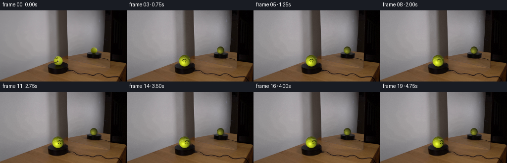
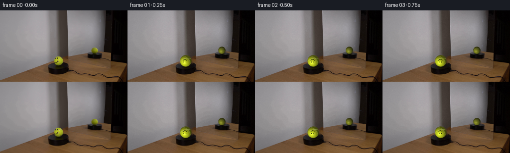
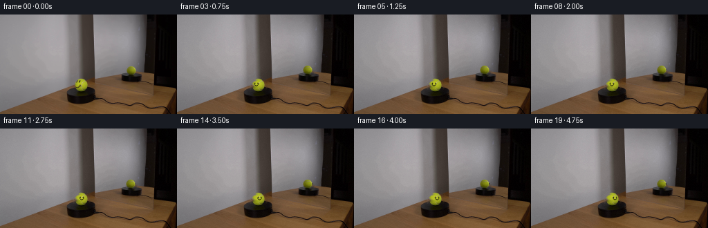

CODING AGENTS AS PIXEL WORLD MODELS
traex/DeepSeek-V4.1-Flash · 0119
点击播放 · 原生 RGB 像素
逐轮保存的候选
回放视频、检查图与代码变化。
每份候选均可单独播放。实际图片检查记录在下方工具轨迹中。
候选 01播放与检查图
点击播放 · 原生 RGB 像素

展开代码变化
--- 上一保存版本
+++ 本次保存版本
@@ -0,0 +1,262 @@
+from pathlib import Path
+
+import cv2
+import numpy as np
+from PIL import Image
+from scipy.ndimage import gaussian_filter
+
+import artifact_io
+
+
+CASE_DIR = Path(__file__).resolve().parent
+WIDTH, HEIGHT = 256, 144
+FRAME_COUNT = 20
+SUPERSAMPLE = 4
+
+BALL_CENTER = np.array([117.2, 102.0])
+BALL_RADIUS = 11.7
+
+REFLECTION_CENTER = np.array([190.0, 81.0])
+REFLECTION_RADIUS = 7.35
+
+
+def _disc_mask(shape, center, radius):
+ yy, xx = np.mgrid[: shape[0], : shape[1]]
+ return (xx - center[0]) ** 2 + (yy - center[1]) ** 2 <= radius**2
+
+
+def make_clean_plate(source):
+ """Remove the original sphere images while retaining the photographed room."""
+ plate = source.copy()
+
+ ball_mask = _disc_mask(source.shape, BALL_CENTER, BALL_RADIUS + 2.2).astype(np.uint8) * 255
+ ball_mask = cv2.dilate(ball_mask, np.ones((3, 3), np.uint8), iterations=1)
+
+ yy, xx = np.mgrid[:HEIGHT, :WIDTH]
+ reflection_mask = (
+ ((xx - REFLECTION_CENTER[0]) / 9.5) ** 2
+ + ((yy - REFLECTION_CENTER[1]) / 8.2) ** 2
+ <= 1.0
+ ).astype(np.uint8) * 255
+
+ mask = cv2.bitwise_or(ball_mask, reflection_mask)
+ plate = cv2.inpaint(
+ cv2.cvtColor(plate, cv2.COLOR_RGB2BGR),
+ mask,
+ 4.0,
+ cv2.INPAINT_TELEA,
+ )
+ plate = cv2.cvtColor(plate, cv2.COLOR_BGR2RGB)
+
+ # Suppress residual ringing from the two removed highlights with a narrow,
+ # locally weighted low-pass pass.
+ soft = gaussian_filter(plate.astype(np.float32), sigma=(0.7, 0.7, 0))
+ weight = gaussian_filter(mask.astype(np.float32) / 255.0, 1.4)
+ weight = np.clip(weight * 1.8, 0.0, 0.78)[..., None]
+ plate = (plate * (1.0 - weight) + soft * weight).clip(0, 255).astype(np.uint8)
+ return plate
+
+
+def _wrap(angle):
+ return (angle + np.pi) % (2.0 * np.pi) - np.pi
+
+
+def _smoothstep(edge0, edge1, x):
+ t = np.clip((x - edge0) / (edge1 - edge0), 0.0, 1.0)
+ return t * t * (3.0 - 2.0 * t)
+
+
+def _sphere_fields(radius, size, supersample):
+ """Return sphere normals and a premultiplied analytic alpha for a sprite."""
+ pixels = size * supersample
+ yy, xx = np.mgrid[:pixels, :pixels].astype(np.float32)
+ center = (pixels - 1.0) * 0.5
+ sx = (xx - center) / (radius * supersample)
+ sy = (yy - center) / (radius * supersample)
+ rr = sx * sx + sy * sy
+ inside = rr <= 1.0
+ nz = np.sqrt(np.clip(1.0 - rr, 0.0, 1.0))
+ coverage = np.clip((1.0 - np.sqrt(rr)) * radius * supersample + 0.5, 0.0, 1.0)
+ return sx, sy, nz, inside, coverage
+
+
+def render_ball(radius_px, face_longitude, face_latitude=0.02, reflection=False):
+ """Render a tennis ball with a spherical smiley-face decal."""
+ ss = SUPERSAMPLE
+ size = int(np.ceil(radius_px * 2.0 + 4.0))
+ nx, ny, nz, inside, coverage = _sphere_fields(radius_px, size, ss)
+
+ lon = np.arctan2(nx, np.maximum(nz, 1e-5))
+ lat = np.arcsin(np.clip(ny, -1.0, 1.0))
+
+ # Two faint geodesic tennis seams. They are deliberately narrow at this
+ # image scale so the face remains the visual focus.
+ normal = np.stack((nx, ny, nz), axis=-1)
+ seam_a = np.abs(normal @ np.array([0.22, 0.88, 0.42], dtype=np.float32))
+ seam_b = np.abs(normal @ np.array([-0.63, 0.56, 0.54], dtype=np.float32))
+ seam = np.maximum(
+ np.exp(-((seam_a / 0.040) ** 2)),
+ 0.72 * np.exp(-((seam_b / 0.034) ** 2)),
+ )
+ seam *= _smoothstep(0.02, 0.12, nz)
+
+ # Directional studio light, with a cooler rim from the right.
+ light = np.array([-0.42, 0.55, 0.72], dtype=np.float32)
+ light /= np.linalg.norm(light)
+ ndotl = np.clip(normal @ light, 0.0, 1.0)
+ half = light + np.array([0.0, 0.0, 1.0], dtype=np.float32)
+ half /= np.linalg.norm(half)
+ ndoth = np.clip(normal @ half, 0.0, 1.0)
+ specular = ndoth**26 * 0.26
+
+ base = np.array([0.735, 0.785, 0.115], dtype=np.float32)
+ fuzz = (
+ 0.020 * np.sin(42.0 * lon + 17.0 * lat + 1.2)
+ + 0.013 * np.sin(91.0 * lon - 37.0 * lat + 0.4)
+ + 0.009 * np.cos(143.0 * lon + 59.0 * lat)
+ )
+ shading = 0.24 + 0.82 * ndotl + 0.10 * (1.0 - ny)
+ color = base[None, None, :] * shading[..., None]
+ color *= (1.0 + fuzz)[..., None]
+ color += specular[..., None] * np.array([0.72, 0.76, 0.50], dtype=np.float32)
+
+ seam_color = np.array([0.84, 0.86, 0.64], dtype=np.float32)
+ color = color * (1.0 - 0.46 * seam[..., None]) + seam_color * (0.46 * seam[..., None])
+
+ # A small warm bounce from the black platform keeps the lower edge from
+ # clipping to black.
+ bounce = np.clip(-ny, 0.0, 1.0) ** 2 * np.clip(0.20 - nz, 0.0, 1.0)
+ color += bounce[..., None] * np.array([0.10, 0.055, 0.018], dtype=np.float32)
+
+ # Smiley-face decal in a local gnomonic coordinate system. Its apparent
+ # width contracts naturally toward the sphere's silhouette.
+ dlon = _wrap(lon - face_longitude)
+ visible = np.abs(dlon) < 1.48
+ u = np.tan(np.clip(dlon, -1.47, 1.47))
+ v = np.tan(np.clip(lat - face_latitude, -1.45, 1.45)) / np.maximum(
+ np.cos(np.clip(dlon, -1.47, 1.47)), 0.18
+ )
+
+ eye_y = 0.19
+ eye_dx = 0.205
+ eye = (
+ ((u + eye_dx) / 0.055) ** 2 + ((v - eye_y) / 0.085) ** 2 < 1.0
+ ) | (((u - eye_dx) / 0.055) ** 2 + ((v - eye_y) / 0.085) ** 2 < 1.0)
+
+ # U-shaped smile: high corners and a lower center.
+ mouth_u = np.abs(u) < 0.36
+ mouth_v = -0.055 - 0.25 * (1.0 - (u / 0.36) ** 2)
+ mouth = mouth_u & (np.abs(v - mouth_v) < 0.038)
+
+ face = (eye | mouth) & visible
+ face_aa = gaussian_filter(face.astype(np.float32), 0.75)
+ face_aa = np.clip(face_aa * 1.35, 0.0, 1.0)
+ ink = np.array([0.018, 0.017, 0.009], dtype=np.float32)
+ ink = ink + (
+ 0.10
+ * specular[..., None]
+ * np.array([0.38, 0.38, 0.24], dtype=np.float32)
+ )
+ color = color * (1.0 - 0.94 * face_aa[..., None]) + ink * (0.94 * face_aa[..., None])
+
+ if reflection:
+ # Mirror attenuation: darker, slightly gray, and softly focused.
+ luma = color @ np.array([0.2126, 0.7152, 0.0722], dtype=np.float32)
+ color = color * 0.57 + luma[..., None] * 0.10
+ color = color * np.array([0.91, 0.89, 0.86], dtype=np.float32)
+ color = gaussian_filter(color, sigma=(1.3, 1.3, 0))
+
+ # Dark edge roll-off and cool environmental rim.
+ edge = np.clip(1.0 - nz, 0.0, 1.0)
+ color *= (1.0 - 0.20 * edge[..., None] ** 1.5)
+ color += 0.035 * edge[..., None] ** 2 * np.array([0.55, 0.58, 0.64], dtype=np.float32)
+
+ rgba = np.empty((size * ss, size * ss, 4), dtype=np.float32)
+ rgba[..., :3] = np.clip(color, 0.0, 1.0)
+ rgba[..., 3] = coverage * inside
+
+ down = cv2.resize(
+ rgba,
+ (size, size),
+ interpolation=cv2.INTER_AREA,
+ )
+ return down
+
+
+def _overlay_alpha(dst, sprite, center):
+ """Alpha-composite a premultiplied sprite at a floating-point center."""
+ h, w = sprite.shape[:2]
+ x0 = int(np.floor(center[0] - w * 0.5))
+ y0 = int(np.floor(center[1] - h * 0.5))
+ x1, y1 = x0 + w, y0 + h
+
+ sx0, sy0 = max(0, -x0), max(0, -y0)
+ sx1, sy1 = w - max(0, x1 - WIDTH), h - max(0, y1 - HEIGHT)
+ dx0, dy0 = max(0, x0), max(0, y0)
+ dx1, dy1 = min(WIDTH, x1), min(HEIGHT, y1)
+ if dx1 <= dx0 or dy1 <= dy0:
+ return
+
+ patch = sprite[sy0:sy1, sx0:sx1]
+ alpha = patch[..., 3:4]
+ dst[dy0:dy1, dx0:dx1] = (
+ dst[dy0:dy1, dx0:dx1] * (1.0 - alpha) + patch[..., :3] * alpha
+ )
+
+
+def add_contact_shadow(frame):
+ yy, xx = np.mgrid[:HEIGHT, :WIDTH].astype(np.float32)
+ sx, sy = 14.5, 4.1
+ core = np.exp(
+ -0.5
+ * (
+ ((xx - 117.5) / sx) ** 2
+ + ((yy - 113.7) / sy) ** 2
+ )
+ )
+ core *= yy >= 109.0
+ frame *= (1.0 - 0.26 * core[..., None])
+
+
+def render_frames(source):
+ plate = make_clean_plate(source)
+ frames = np.empty((FRAME_COUNT, HEIGHT, WIDTH, 3), dtype=np.uint8)
+ frames[0] = source
+
+ for index in range(1, FRAME_COUNT):
+ frame = plate.astype(np.float32) / 255.0
+ add_contact_shadow(frame)
+
+ t = index / (FRAME_COUNT - 1)
+ direct_face_lon = -0.20 + 0.83 * t
+ reflected_face_lon = direct_face_lon - 1.57
+
+ reflection = render_ball(
+ REFLECTION_RADIUS,
+ reflected_face_lon,
+ face_latitude=0.01,
+ reflection=True,
+ )
+ _overlay_alpha(frame, reflection, REFLECTION_CENTER)
+
+ ball = render_ball(BALL_RADIUS, direct_face_lon)
+ _overlay_alpha(frame, ball, BALL_CENTER)
+
+ # Very restrained sensor grain preserves the photographed texture while
+ # avoiding a synthetic, perfectly static background.
+ rng = np.random.default_rng(1701 + index)
+ grain = rng.normal(0.0, 0.0032, size=(HEIGHT, WIDTH, 1)).astype(np.float32)
+ frame += grain
+ frames[index] = np.clip(frame * 255.0 + 0.5, 0.0, 255.0).astype(np.uint8)
+
+ return frames
+
+
+def main():
+ source = np.asarray(Image.open(CASE_DIR / "first_frame.png").convert("RGB"))
+ frames = render_frames(source)
+ artifact_io.save(frames, CASE_DIR)
+
+
+if __name__ == "__main__":
+ main()
候选 02播放与检查图
点击播放 · 原生 RGB 像素

展开代码变化
--- 上一保存版本
+++ 本次保存版本
@@ -13,8 +13,8 @@
FRAME_COUNT = 20
SUPERSAMPLE = 4
-BALL_CENTER = np.array([117.2, 102.0])
-BALL_RADIUS = 11.7
+BALL_CENTER = np.array([117.5, 101.5])
+BALL_RADIUS = 10.65
REFLECTION_CENTER = np.array([190.0, 81.0])
REFLECTION_RADIUS = 7.35
@@ -55,6 +55,61 @@
weight = np.clip(weight * 1.8, 0.0, 0.78)[..., None]
plate = (plate * (1.0 - weight) + soft * weight).clip(0, 255).astype(np.uint8)
return plate
+
+
+def make_ball_base(source):
+ """Remove only the original facial ink, preserving the photographed ball."""
+ base = source.copy()
+ mask = np.zeros((HEIGHT, WIDTH), dtype=np.uint8)
+ for x0, y0, x1, y1 in (
+ (109, 94, 113, 99),
+ (113, 94, 117, 99),
+ (108, 100, 119, 106),
+ ):
+ mask[y0:y1, x0:x1] = 255
+ yy, xx = np.mgrid[:HEIGHT, :WIDTH]
+ mask[(xx - BALL_CENTER[0]) ** 2 + (yy - BALL_CENTER[1]) ** 2 > 10.8**2] = 0
+ base = cv2.inpaint(
+ cv2.cvtColor(base, cv2.COLOR_RGB2BGR),
+ mask,
+ 2.5,
+ cv2.INPAINT_TELEA,
+ )
+ return cv2.cvtColor(base, cv2.COLOR_BGR2RGB)
+
+
+def make_reflection_base(source):
+ """Crop the photographed mirror image without altering its optics."""
+ pad = int(np.ceil(REFLECTION_RADIUS + 3.0))
+ cx, cy = REFLECTION_CENTER
+ x0, y0 = int(round(cx)) - pad, int(round(cy)) - pad
+ size = pad * 2 + 1
+ sprite = np.zeros((size, size, 4), dtype=np.float32)
+ yy, xx = np.mgrid[:size, :size]
+ local_cx = cx - x0
+ local_cy = cy - y0
+ distance = np.sqrt((xx - local_cx) ** 2 + (yy - local_cy) ** 2)
+ alpha = np.clip((REFLECTION_RADIUS - distance) * 2.4 + 0.5, 0.0, 1.0)
+ alpha = gaussian_filter(alpha, 0.45)
+ src_x0, src_y0 = max(0, x0), max(0, y0)
+ src_x1, src_y1 = min(WIDTH, x0 + size), min(HEIGHT, y0 + size)
+ dx0, dy0 = src_x0 - x0, src_y0 - y0
+ dx1, dy1 = dx0 + src_x1 - src_x0, dy0 + src_y1 - src_y0
+ sprite[dy0:dy1, dx0:dx1, :3] = (
+ source[src_y0:src_y1, src_x0:src_x1].astype(np.float32) / 255.0
+ )
+ sprite[dy0:dy1, dx0:dx1, 3] = alpha[dy0:dy1, dx0:dx1]
+ return sprite
+
+
+def overlay_ball_base(frame, ball_base):
+ yy, xx = np.mgrid[:HEIGHT, :WIDTH]
+ distance = np.sqrt(
+ (xx - BALL_CENTER[0]) ** 2 + (yy - BALL_CENTER[1]) ** 2
+ )
+ alpha = np.clip((BALL_RADIUS - distance) * 2.0 + 0.5, 0.0, 1.0)
+ alpha = gaussian_filter(alpha, 0.42)[..., None]
+ frame[:] = frame * (1.0 - alpha) + (ball_base.astype(np.float32) / 255.0) * alpha
def _wrap(angle):
@@ -80,7 +135,13 @@
return sx, sy, nz, inside, coverage
-def render_ball(radius_px, face_longitude, face_latitude=0.02, reflection=False):
+def render_ball(
+ radius_px,
+ face_longitude,
+ face_latitude=0.02,
+ reflection=False,
+ face_only=False,
+):
"""Render a tennis ball with a spherical smiley-face decal."""
ss = SUPERSAMPLE
size = int(np.ceil(radius_px * 2.0 + 4.0))
@@ -109,13 +170,13 @@
ndoth = np.clip(normal @ half, 0.0, 1.0)
specular = ndoth**26 * 0.26
- base = np.array([0.735, 0.785, 0.115], dtype=np.float32)
+ base = np.array([0.615, 0.665, 0.115], dtype=np.float32)
fuzz = (
0.020 * np.sin(42.0 * lon + 17.0 * lat + 1.2)
+ 0.013 * np.sin(91.0 * lon - 37.0 * lat + 0.4)
+ 0.009 * np.cos(143.0 * lon + 59.0 * lat)
)
- shading = 0.24 + 0.82 * ndotl + 0.10 * (1.0 - ny)
+ shading = 0.20 + 0.90 * ndotl + 0.12 * (1.0 - ny)
color = base[None, None, :] * shading[..., None]
color *= (1.0 + fuzz)[..., None]
color += specular[..., None] * np.array([0.72, 0.76, 0.50], dtype=np.float32)
@@ -137,7 +198,7 @@
np.cos(np.clip(dlon, -1.47, 1.47)), 0.18
)
- eye_y = 0.19
+ eye_y = -0.16
eye_dx = 0.205
eye = (
((u + eye_dx) / 0.055) ** 2 + ((v - eye_y) / 0.085) ** 2 < 1.0
@@ -145,7 +206,7 @@
# U-shaped smile: high corners and a lower center.
mouth_u = np.abs(u) < 0.36
- mouth_v = -0.055 - 0.25 * (1.0 - (u / 0.36) ** 2)
+ mouth_v = -0.15 + 0.33 * (1.0 - (u / 0.36) ** 2)
mouth = mouth_u & (np.abs(v - mouth_v) < 0.038)
face = (eye | mouth) & visible
@@ -172,8 +233,12 @@
color += 0.035 * edge[..., None] ** 2 * np.array([0.55, 0.58, 0.64], dtype=np.float32)
rgba = np.empty((size * ss, size * ss, 4), dtype=np.float32)
- rgba[..., :3] = np.clip(color, 0.0, 1.0)
- rgba[..., 3] = coverage * inside
+ if face_only:
+ rgba[..., :3] = np.clip(ink, 0.0, 1.0)
+ rgba[..., 3] = face_aa * coverage * inside
+ else:
+ rgba[..., :3] = np.clip(color, 0.0, 1.0)
+ rgba[..., 3] = coverage * inside
down = cv2.resize(
rgba,
@@ -220,27 +285,32 @@
def render_frames(source):
plate = make_clean_plate(source)
+ ball_base = make_ball_base(source)
+ reflection_base = make_reflection_base(source)
frames = np.empty((FRAME_COUNT, HEIGHT, WIDTH, 3), dtype=np.uint8)
frames[0] = source
for index in range(1, FRAME_COUNT):
frame = plate.astype(np.float32) / 255.0
add_contact_shadow(frame)
+ _overlay_alpha(frame, reflection_base, REFLECTION_CENTER)
+ overlay_ball_base(frame, ball_base)
t = index / (FRAME_COUNT - 1)
- direct_face_lon = -0.20 + 0.83 * t
+ direct_face_lon = -0.33 + 0.78 * t
reflected_face_lon = direct_face_lon - 1.57
- reflection = render_ball(
+ reflection_face = render_ball(
REFLECTION_RADIUS,
reflected_face_lon,
face_latitude=0.01,
reflection=True,
+ face_only=True,
)
- _overlay_alpha(frame, reflection, REFLECTION_CENTER)
-
- ball = render_ball(BALL_RADIUS, direct_face_lon)
- _overlay_alpha(frame, ball, BALL_CENTER)
+ _overlay_alpha(frame, np.fliplr(reflection_face), REFLECTION_CENTER)
+
+ face = render_ball(BALL_RADIUS, direct_face_lon, face_only=True)
+ _overlay_alpha(frame, face, BALL_CENTER)
# Very restrained sensor grain preserves the photographed texture while
# avoiding a synthetic, perfectly static background.
候选 03播放与检查图
候选 04播放与检查图
点击播放 · 原生 RGB 像素

展开代码变化
--- 上一保存版本
+++ 本次保存版本
@@ -29,7 +29,7 @@
"""Remove the original sphere images while retaining the photographed room."""
plate = source.copy()
- ball_mask = _disc_mask(source.shape, BALL_CENTER, BALL_RADIUS + 2.2).astype(np.uint8) * 255
+ ball_mask = _disc_mask(source.shape, BALL_CENTER, BALL_RADIUS + 1.4).astype(np.uint8) * 255
ball_mask = cv2.dilate(ball_mask, np.ones((3, 3), np.uint8), iterations=1)
yy, xx = np.mgrid[:HEIGHT, :WIDTH]
@@ -43,16 +43,16 @@
plate = cv2.inpaint(
cv2.cvtColor(plate, cv2.COLOR_RGB2BGR),
mask,
- 4.0,
+ 3.0,
cv2.INPAINT_TELEA,
)
plate = cv2.cvtColor(plate, cv2.COLOR_BGR2RGB)
# Suppress residual ringing from the two removed highlights with a narrow,
# locally weighted low-pass pass.
- soft = gaussian_filter(plate.astype(np.float32), sigma=(0.7, 0.7, 0))
- weight = gaussian_filter(mask.astype(np.float32) / 255.0, 1.4)
- weight = np.clip(weight * 1.8, 0.0, 0.78)[..., None]
+ soft = gaussian_filter(plate.astype(np.float32), sigma=(0.55, 0.55, 0))
+ weight = gaussian_filter(mask.astype(np.float32) / 255.0, 1.2)
+ weight = np.clip(weight * 1.4, 0.0, 0.60)[..., None]
plate = (plate * (1.0 - weight) + soft * weight).clip(0, 255).astype(np.uint8)
return plate
候选 05播放与检查图
候选 06播放与检查图
点击播放 · 原生 RGB 像素

展开代码变化
--- 上一保存版本
+++ 本次保存版本
@@ -28,7 +28,6 @@
def make_clean_plate(source):
"""Remove the original sphere images while retaining the photographed room."""
plate = source.copy()
-
ball_mask = _disc_mask(source.shape, BALL_CENTER, BALL_RADIUS + 1.4).astype(np.uint8) * 255
ball_mask = cv2.dilate(ball_mask, np.ones((3, 3), np.uint8), iterations=1)
@@ -48,12 +47,6 @@
)
plate = cv2.cvtColor(plate, cv2.COLOR_BGR2RGB)
- # Suppress residual ringing from the two removed highlights with a narrow,
- # locally weighted low-pass pass.
- soft = gaussian_filter(plate.astype(np.float32), sigma=(0.55, 0.55, 0))
- weight = gaussian_filter(mask.astype(np.float32) / 255.0, 1.2)
- weight = np.clip(weight * 1.4, 0.0, 0.60)[..., None]
- plate = (plate * (1.0 - weight) + soft * weight).clip(0, 255).astype(np.uint8)
return plate
可观测工具轨迹
实际执行的命令与返回图片。
命令 1exit 0
/bin/bash -c "pwd && rg --files -g '"'!*.mp4'"' -g '"'!*.mov'"' -g '"'!*.avi'"' | sed -n '1,160p'"
命令 2exit 0
/bin/bash -c "sed -n '1,240p' GENERATION_RULES.md"
命令 3exit 0
/bin/bash -c "sed -n '1,240p' prompt.txt"
命令 4exit 0
/bin/bash -c "find . -maxdepth 2 -type f -printf '%p %s bytes\\n' | sort | sed -n '1,200p'"
命令 5exit 0
/bin/bash -c "sed -n '1,260p' artifact_io.py"
命令 6exit 0
/bin/bash -c "python - <<'PY'
from PIL import Image
import numpy as np
im=Image.open('first_frame.png')
a=np.array(im)
print(im.mode, im.size, a.shape, a.dtype)
print('extrema', a.reshape(-1,3).min(0), a.reshape(-1,3).max(0))
# common exact colors
u,c=np.unique(a.reshape(-1,3),axis=0,return_counts=True)
for i in np.argsort(c)[-30:][::-1]: print(tuple(u[i]),int(c[i]))
PY"命令 7exit 0
/bin/bash -c "python - <<'PY'
from PIL import Image
import numpy as np
im=np.array(Image.open('first_frame.png')).astype(float)
g=(.2126*im[:,:,0]+.7152*im[:,:,1]+.0722*im[:,:,2])
# 128x72 average-ish point sample, map luminance
chars=' .,:;irsXA253hMHGS#9B&@'
for y in range(0,144,2):
line=''
for x in range(0,256,2):
v=g[y:y+2,x:x+2].mean()
line+=chars[min(len(chars)-1,int(v/256*len(chars)))]
print(f'{y:03d} '+line)
PY"命令 8exit 0
/bin/bash -c "python - <<'PY'
from PIL import Image
import numpy as np
from colorsys import rgb_to_hsv
a=np.array(Image.open('first_frame.png')).astype(np.float32)/255
mx=a.max(2); mn=a.min(2); d=mx-mn
h=np.zeros_like(mx)
m=d>1e-6
# vector HSV hue
r,g,b=a[:,:,0],a[:,:,1],a[:,:,2]
ix=(mx==r)&m; h[ix]=((g[ix]-b[ix])/d[ix])%6
ix=(mx==g)&m; h[ix]=(b[ix]-r[ix])/d[ix]+2
ix=(mx==b)&m; h[ix]=(r[ix]-g[ix])/d[ix]+4
h/=6; s=np.where(mx>0,d/mx,0); v=mx
# yellow/green likely tennis
for lo,hi,name in [(0.10,0.22,'yellow-green'),(0.15,0.35,'yellow2'),(0.05,0.15,'orange-yellow')]:
m2=(h>=lo)&(h<hi)&(s>.25)&(v>.15)
ys,xs=np.where(m2)
print(name, len(xs), (xs.min(),ys.min(),xs.max(),ys.max()) if len(xs) else None, 'mean rgb',a[m2].mean(0)*255)
# components rough bbox clusters
# dominant colors by hue/sat/value categories
for name,m2 in [('bright yellow',(h>.10)&(h<.25)&(s>.45)&(v>.35)),('green',(h>.20)&(h<.45)&(s>.3)&(v>.15)),('white',(s<.12)&(v>.5)),('black',(v<.15))]:
ys,xs=np.where(m2)
print(name,len(xs), (xs.min(),ys.min(),xs.max(),ys.max()) if len(xs) else None)
PY"命令 9exit 0
/bin/bash -c "python - <<'PY'
from PIL import Image
import numpy as np
a=np.array(Image.open('first_frame.png')).astype(np.float32)/255
r,g,b=a[:,:,0],a[:,:,1],a[:,:,2]; mx=a.max(2);mn=a.min(2);d=mx-mn
h=np.zeros_like(mx);m=d>1e-6
ix=(mx==r)&m;h[ix]=((g[ix]-b[ix])/d[ix])%6
ix=(mx==g)&m;h[ix]=(b[ix]-r[ix])/d[ix]+2
ix=(mx==b)&m;h[ix]=(r[ix]-g[ix])/d[ix]+4
h/=6;s=np.where(mx>0,d/mx,0);v=mx
m2=(h>=.10)&(h<.25)&(s>.3)&(v>.2)
# print x/y coords grouped
ys,xs=np.where(m2)
print('all',len(xs),'mean',a[m2].mean(0)*255)
for y in range(70,120,2):
xx=np.where(m2[y:y+2].any(0))[0]
if len(xx): print(y,xx.min(),xx.max(),len(xx), 'rgb',a[y:y+2][m2[y:y+2]].mean(0)*255)
PY"命令 10exit 0
/bin/bash -c "python - <<'PY'
from PIL import Image
import numpy as np
a=np.array(Image.open('first_frame.png'))
# classify by HSV-ish
f=a.astype(float)/255
r,g,b=f[:,:,0],f[:,:,1],f[:,:,2]; mx=f.max(2);mn=f.min(2);d=mx-mn
h=np.zeros_like(mx);m=d>1e-4
ix=(mx==r)&m;h[ix]=((g[ix]-b[ix])/d[ix])%6
ix=(mx==g)&m;h[ix]=(b[ix]-r[ix])/d[ix]+2
ix=(mx==b)&m;h[ix]=(r[ix]-g[ix])/d[ix]+4
h/=6;s=np.where(mx>0,d/mx,0);v=mx
# char: yellow Y, warm O, neutral brightness scale, black #, red R, blue B
for y in range(0,144,2):
line=''
for x in range(0,256,2):
hh=h[y:y+2,x:x+2].mean();ss=s[y:y+2,x:x+2].mean();vv=v[y:y+2,x:x+2].mean()
if ss>.28 and .09<hh<.24 and vv>.18: ch='Y'
elif ss>.30 and hh<.09 and vv>.15: ch='R'
elif ss>.30 and .5<hh<.75 and vv>.15: ch='B'
elif vv<.10: ch='#'
elif vv<.20: ch='@'
elif vv<.30: ch='%'
elif vv<.42: ch='x'
elif vv<.54: ch='+'
elif vv<.66: ch='='
elif vv<.78: ch='-'
elif vv<.90: ch='.'
else: ch=' '
line+=ch
print(f'{y:03d} '+line)
PY"命令 11exit 0
/bin/bash -c "python - <<'PY'
from PIL import Image
import numpy as np
a=np.array(Image.open('first_frame.png'))
# write some enlarged crops to tmp
for name,box in [('scene',(0,0,256,144)),('ball',(90,68,140,122)),('reflection',(170,62,210,95)),('platform',(85,82,220,143)),('mirror',(20,0,180,120))]:
Image.fromarray(a[box[1]:box[3],box[0]:box[2]]).resize(((box[2]-box[0])*5,(box[3]-box[1])*5),Image.Resampling.NEAREST).save('.tmp/'+name+'.png')
# crop color grids numeric
for y in range(70,116,4):
print('y',y,[(x,tuple(a[y,x])) for x in range(100,132,4)])
PY"命令 12exit 0
/bin/bash -c "python - <<'PY'
from PIL import Image
import numpy as np
im=np.array(Image.open('first_frame.png')).astype(np.int16)
# row/col variance and edge strength
for y in range(0,144,4):
print('row',y,'mean',im[y].mean(0).round(1),'std',im[y].std(0).round(1),'minmax',im[y].min(0),im[y].max(0))
PY"命令 13exit 0
/bin/bash -c "python - <<'PY'
from PIL import Image
import numpy as np
im=np.array(Image.open('first_frame.png'))
for y in range(0,144,6):
s=[]
for x in range(0,256,8): s.append(f'{im[y:y+6,x:x+8].mean():4.0f}')
print(f'{y:03d}', ' '.join(s))
PY"命令 14exit 0
/bin/bash -c "python - <<'PY'
from PIL import Image
import numpy as np
a=np.array(Image.open('first_frame.png'))
# print each pixel in ball region classified
for y in range(86,118):
line=''
for x in range(101,135):
r,g,b=map(int,a[y,x]); v=max(r,g,b)
# ball-like yellow if r,g > b*1.4 and g>40
if g>45 and r>45 and g>b*1.5 and r>b*1.4:
if v<70: c='d'
elif v<110: c='m'
elif v<150: c='o'
elif v<185: c='Y'
else: c='W'
elif v<25:c='#'
elif v<55:c='@'
elif v<90:c='x'
elif v<125:c='+'
elif v<160:c='='
elif v<190:c='-'
else:c='.'
line+=c
print(f'{y:3d} {line}')
print('x labels 101-134')
PY"命令 15exit 0
/bin/bash -c "python - <<'PY'
from PIL import Image
import numpy as np
from sklearn.cluster import KMeans
im=np.array(Image.open('first_frame.png'))
print('shape',im.shape)
# KMeans sample all pixels
X=im.reshape(-1,3)
km=KMeans(n_clusters=12,random_state=0,n_init=4).fit(X)
cent=km.cluster_centers_.round().astype(int)
counts=np.bincount(km.labels_,minlength=12)
for i in np.argsort(counts)[::-1]: print(counts[i],cent[i])
# nearest cluster ascii every 4 px
labs=km.labels_.reshape(im.shape[:2])
order=np.argsort(counts)[::-1]
chars='0123456789AB'
for y in range(0,144,4):
print(''.join(chars[list(order).index(labs[y,x])] for x in range(0,256,4)))
PY"命令 16exit 0
/bin/bash -c "python - <<'PY'
from PIL import Image
import numpy as np
a=np.array(Image.open('first_frame.png'))
# nearest matching background color statistics in ball region
for y in range(90,116):
print(y, ' '.join(f'{a[y,x,0]:02x}{a[y,x,1]:02x}{a[y,x,2]:02x}' for x in range(104,132)))
PY"命令 17exit 0
/bin/bash -c "python - <<'PY'
from PIL import Image
import numpy as np
a=np.array(Image.open('first_frame.png'))
# print grayscale with max colors, full x width every 2, y rows 84-120
chars=' .,:;irsXA253hMHGS#9B&@'
for y in range(82,121):
line=''
for x in range(0,256,2):
v=a[y:y+1,x:x+2].mean()
line+=chars[min(17,int(v/256*18))]
print(f'{y:3d} {line}')
PY"命令 18exit 0
/bin/bash -c "python - <<'PY'
from PIL import Image
import numpy as np
a=np.array(Image.open('first_frame.png'))
# exact ball crop coordinates 102..132 x, 90..116 y. class by hue/sat/value
for y in range(89,117):
line=''
for x in range(101,136):
r,g,b=a[y,x].astype(float)/255
mx=max(r,g,b);mn=min(r,g,b);d=mx-mn
if d<.02: hh=0
elif mx==r: hh=((g-b)/d)%6
elif mx==g: hh=(b-r)/d+2
else: hh=(r-g)/d+4
hh/=6;s=0 if mx==0 else d/mx
if s>.25 and .09<hh<.24 and mx>.12:
# ball yellow, brightness tiers
ch=' .:-=+*#%@'[min(9,int(mx*10))]
elif mx<.06:ch='K'
elif mx<.16:ch='k'
elif s<.12:ch='W' if mx>.45 else 'g'
else: ch='?'
line+=ch
print(f'{y:3d} {line}')
PY"命令 19exit 1
/bin/bash -c "python - <<'PY'
from PIL import Image
import numpy as np
a=np.array(Image.open('first_frame.png')).astype(float)
# gradient edge strength
gx=np.abs(np.diff(a.mean(2),axis=1)); gy=np.abs(np.diff(a.mean(2),axis=0))
# list strong boundary points by row region
for y in range(75,125):
xs=np.where((gx[y]>20)|(gy[min(y,142)]>20))[0]
# group
groups=[]
for x in xs:
if not groups or x>groups[-1][-1]+1: groups.append([x])
else: groups[-1].append(x)
if groups: print(y,[(g[0],g[-1]) for g in groups if len(g)>=1])
PY"命令 20exit 0
/bin/bash -c "python - <<'PY'
from PIL import Image
import numpy as np
a=np.array(Image.open('first_frame.png'))
f=a/255.
r,g,b=f[:,:,0],f[:,:,1],f[:,:,2]; mx=f.max(2); mn=f.min(2); d=mx-mn
h=np.zeros_like(mx); m=d>1e-4
ix=(mx==r)&m; h[ix]=((g[ix]-b[ix])/d[ix])%6
ix=(mx==g)&m; h[ix]=(b[ix]-r[ix])/d[ix]+2
ix=(mx==b)&m; h[ix]=(r[ix]-g[ix])/d[ix]+4
h/=6; s=np.where(mx>0,d/mx,0); v=mx
for y in range(85,120):
line=''
for x in range(100,136):
hh,s_,v_=h[y,x],s[y,x],v[y,x]
if .08<hh<.24 and s_>.35 and v_>.12: ch='#'
elif .08<hh<.24 and s_>.20 and v_>.12: ch='+'
elif v_<.08: ch=' '
elif v_<.20: ch='.'
elif v_<.32: ch=':'
elif v_<.45: ch='-'
elif v_<.58: ch='='
elif v_<.7: ch='o'
else: ch='@'
line+=ch
print(f'{y:3d} {line}')
PY"命令 21exit 0
/bin/bash -c "python - <<'PY'
from PIL import Image
import numpy as np
a=np.array(Image.open('first_frame.png'))
# selected crop as coarse blocks mean RGB every 4x4
for y in range(88,116,4):
print('Y',y)
for x in range(100,136,4):
b=a[y:y+4,x:x+4].mean((0,1)).round().astype(int)
print(f'{x:3d}:{b[0]:3d},{b[1]:3d},{b[2]:3d}',end=' ')
print()
PY"命令 22exit 0
/bin/bash -c "python - <<'PY'
from PIL import Image
import numpy as np
a=np.array(Image.open('first_frame.png'))
for y in range(72,96):
line=''
for x in range(170,205):
r,g,b=a[y,x]
if g>40 and r>40 and g>b*1.5 and r>b*1.4: ch='Y'
elif max(r,g,b)<25:ch='#'
elif max(r,g,b)<55:ch='@'
elif max(r,g,b)<90:ch='x'
elif max(r,g,b)<125:ch='+'
elif max(r,g,b)<160:ch='='
else:ch='.'
line+=ch
print(f'{y:3d} {line}')
PY"命令 23exit 0
/bin/bash -c "python - <<'PY'
from PIL import Image
import numpy as np
a=np.array(Image.open('first_frame.png'))
# compute background via local medians in vertical bands? approximate nearest symmetry
# dump rows in reflection patch to see circle and bright band
for y in range(72,92):
print(y,' '.join(f'{a[y,x].mean():.0f}' for x in range(170,204)))
PY"命令 24exit 0
/bin/bash -c "python - <<'PY'
from PIL import Image
import numpy as np
a=np.array(Image.open('first_frame.png'))
# Print dominant exact/near colors in patches
for name,(x0,y0,x1,y1) in {'bg':(0,0,60,80),'mirror':(40,0,150,80),'platform':(140,105,220,140),'ball':(104,90,132,113),'reflection':(176,72,202,88),'floor':(0,120,80,144)}.items():
p=a[y0:y1,x0:x1].reshape(-1,3)
u,c=np.unique(p,axis=0,return_counts=True)
print(name, 'mean',p.mean(0).round(1),'min',p.min(0),'max',p.max(0))
for i in np.argsort(c)[-5:][::-1]:print(' ',tuple(u[i]),int(c[i]))
PY"命令 25exit 0
/bin/bash -c "python - <<'PY'
from PIL import Image
import numpy as np
a=np.array(Image.open('first_frame.png')).astype(np.int16)
# compute difference from vertical symmetric-ish? print gradients in lower floor at x positions
for x in range(0,256,4):
col=a[:,x].mean(1)
print(x, ' '.join(f'{col[y]:.0f}' for y in range(80,144,4)))
PY"命令 26exit 0
/bin/bash -c "python - <<'PY'
try:
import cv2; print('cv2',cv2.__version__)
except Exception as e: print('no cv2',e)
try:
import scipy; print('scipy',scipy.__version__)
except Exception as e: print('no scipy',e)
try:
import imageio; print('imageio',imageio.__version__)
except Exception as e: print('no imageio',e)
PY
ffmpeg -version | head -n 2"命令 27exit 0
/bin/bash -c "python - <<'PY'
from PIL import Image
import numpy as np
a=np.array(Image.open('first_frame.png'))
y,x=np.mgrid[:144,:256]
# ball circle center
cx,cy,r=117,102,11
m=(x-cx)**2+(y-cy)**2<=r*r
f=a/255.; mx=f.max(2);mn=f.min(2);s=np.where(mx>0,(mx-mn)/mx,0);v=mx
# low brightness or low sat inside
mm=m & ((v<.38)|((s<.22)&(v<.55)))
ys,xs=np.where(mm)
print('mask n',len(xs),'bbox',xs.min(),ys.min(),xs.max(),ys.max())
for yy in range(90,115):
line=''
for xx in range(103,132):
if (xx-cx)**2+(yy-cy)**2>r*r:ch=' '
else:
vv=v[yy,xx];ss=s[yy,xx]
if vv<.25 and ss<.4:ch='#'
elif vv<.4 and ss<.4:ch='@'
elif vv<.6 and ss<.4:ch='o'
elif ss<.2 and vv<.7:ch='g'
else:ch='Y'
line+=ch
print(f'{yy:3d} {line}')
PY"命令 28exit 0
/bin/bash -c "python - <<'PY'
from PIL import Image
import numpy as np
a=np.array(Image.open('first_frame.png'))
# write a matrix of dominant class in 3x3 blocks around ball
f=a/255.;r,g,b=f[:,:,0],f[:,:,1],f[:,:,2];mx=f.max(2);mn=f.min(2);d=mx-mn
h=np.zeros_like(mx);m=d>.01
ix=(mx==r)&m;h[ix]=((g[ix]-b[ix])/d[ix])%6
ix=(mx==g)&m;h[ix]=(b[ix]-r[ix])/d[ix]+2
ix=(mx==b)&m;h[ix]=(r[ix]-g[ix])/d[ix]+4
h/=6;s=np.where(mx>0,d/mx,0);v=mx
for y in range(88,116,3):
line=''
for x in range(100,136,3):
hh=h[y:y+3,x:x+3].mean();ss=s[y:y+3,x:x+3].mean();vv=v[y:y+3,x:x+3].mean()
if .08<hh<.25 and ss>.3 and vv>.1:ch='Y'
elif vv<.12:ch='#'
elif vv<.28:ch='@'
elif vv<.45:ch='x'
elif ss<.15:ch='g'
else:ch='?'
line+=ch
print(f'{y:3d} {line}')
PY"命令 29exit 0
/bin/bash -c "python - <<'PY'
from PIL import Image
import numpy as np
a=np.array(Image.open('first_frame.png'))
# rgb at likely eyes and mouth on ball
for y in range(93,110):
print(y,[(x,tuple(map(int,a[y,x]))) for x in range(108,127,2)])
PY"命令 30exit 0
/bin/bash -c "python - <<'PY'
from PIL import Image
import numpy as np
a=np.array(Image.open('first_frame.png'))
# compare candidate circle means outside
for cx,cy,r in [(117,102,11),(118,102,11),(117.5,101.5,11.5)]:
y,x=np.mgrid[:144,:256]; d=np.sqrt((x-cx)**2+(y-cy)**2)
m=d<r
print(cx,cy,r,a[m].mean(0),len(a[m]))
# examine alpha boundary likely exact circular ball? classify yellow cluster connected comp
import cv2
f=a/255.; r_,g_,b_=f[:,:,0],f[:,:,1],f[:,:,2]; mx=f.max(2);mn=f.min(2);d=mx-mn
h=np.zeros_like(mx);m=d>.01
ix=(mx==r_)&m;h[ix]=((g_[ix]-b_[ix])/d[ix])%6
ix=(mx==g_)&m;h[ix]=(b_[ix]-r_[ix])/d[ix]+2
ix=(mx==b_)&m;h[ix]=(r_[ix]-g_[ix])/d[ix]+4
h/=6;s=np.where(mx>0,d/mx,0);v=mx
mask=((h>.09)&(h<.25)&(s>.3)&(v>.1)).astype(np.uint8)
num,lab,stats,cent=cv2.connectedComponentsWithStats(mask)
for i in range(1,num):
x,y,w,hh,area=stats[i]
if area>5: print(i,x,y,w,hh,area,cent[i])
PY"命令 31exit 0
/bin/bash -c "python - <<'PY'
from PIL import Image
import numpy as np
a=np.array(Image.open('first_frame.png'))
# ball mask: use circle center 117,102 radius 11. print relative brightness ratio g or normalized
for y in range(89,116):
line=''
for x in range(104,132):
r,g,b=map(int,a[y,x])
if (x-117)**2+(y-102)**2>12.5**2: ch=' '
elif g<60:ch='@'
elif g<90:ch='#'
elif g<120:ch='o'
elif g<145:ch='*'
elif g<170:ch='+'
elif g<190:ch='-'
else:ch='.'
line+=ch
print(f'{y:3d} {line}')
PY"命令 32exit 0
/bin/bash -c "python - <<'PY'
from PIL import Image
import numpy as np
a=np.array(Image.open('first_frame.png'))
for y in range(74,87):
line=''
for x in range(178,204):
r,g,b=map(int,a[y,x])
if g>45 and r>45 and g>b*1.5 and r>b*1.4:
ch='Y' if max(r,g,b)>100 else 'y'
elif max(r,g,b)<25:ch='#'
elif max(r,g,b)<55:ch='@'
elif max(r,g,b)<90:ch='x'
elif max(r,g,b)<125:ch='+'
elif max(r,g,b)<160:ch='='
else:ch='.'
line+=ch
print(f'{y:3d} {line}')
PY"命令 33exit -1
/bin/bash -c "python - <<'PY'
from PIL import Image
import numpy as np
a=np.array(Image.open('first_frame.png'))
# Region print exact values to find bright background vs dark floor boundaries
for y in [80,84,88,92,96,100,104,108,112,116,120,124,128,132,136,140]:
print('\\ny',y)
for x in range(0,256,8):
p=a[y:y+4,x:x+8].mean((0,1)).round().astype(int)
print(f'{x:3d}:{p[0]:03d}/{p[1]:03d}/{p[2]:03d}',end=' ')
print()
PY"命令 34exit 0
/bin/bash -c "python - <<'PY'
from PIL import Image
import numpy as np
from scipy.ndimage import median_filter, gaussian_filter
a=np.array(Image.open('first_frame.png')).astype(float)
g=a.mean(2)
smooth=gaussian_filter(g,2.0)
res=g-smooth
y,x=np.mgrid[:144,:256]
m=(x-117)**2+(y-102)**2<=11.5**2
for yy in range(90,115):
line=''
for xx in range(104,131):
if not m[yy,xx]: ch=' '
else:
q=res[yy,xx]
if q<-12:ch='#'
elif q<-6:ch='@'
elif q<-2:ch='o'
elif q>12:ch='W'
elif q>6:ch='+'
elif q>2:ch='-'
else:ch='.'
line+=ch
print(f'{yy:3d} {line}')
print('negative peaks')
inds=np.argsort(np.where(m,res,999).ravel())[:30]
for i in inds:
yy,xx=divmod(i,256);print(xx,yy,round(res[yy,xx],1),a[yy,xx].astype(int).tolist())
PY"命令 35exit 0
/bin/bash -c "python - <<'PY'
from PIL import Image
import numpy as np
from scipy.ndimage import gaussian_filter
a=np.array(Image.open('first_frame.png')).astype(float)
g=a.mean(2); base=gaussian_filter(g,2.5); res=g-base
for y in range(90,116):
line=''
for x in range(104,132):
d=(x-117)**2+(y-102)**2
if d>11.5**2:ch=' '
elif res[y,x]<-15:ch='#'
elif res[y,x]<-7:ch='@'
elif res[y,x]<-3:ch='o'
elif res[y,x]>15:ch='W'
elif res[y,x]>7:ch='+'
elif res[y,x]>3:ch='-'
else:ch='.'
line+=ch
print(f'{y:3d} {line}')
PY"命令 36exit 0
/bin/bash -c "python - <<'PY'
from PIL import Image
import numpy as np
a=np.array(Image.open('first_frame.png'))
# Count gradient/contrast within ball to estimate actual face; print only dark spots after removing radial lighting
Y,X=np.mgrid[:144,:256]; cx,cy,r=117,102,11
m=(X-cx)**2+(Y-cy)**2<r*r
g=a.mean(2)
# radial light factor empirical: outer avg by ring
for rr in range(0,12):
mm=(X-cx)**2+(Y-cy)**2<rr*rr
outer=mm&~(((X-cx)**2+(Y-cy)**2)<(rr-1)**2)
print(rr, g[outer].mean() if outer.any() else 0)
# detect dark local minima with min filter
from scipy.ndimage import minimum_filter, median_filter
med=median_filter(g,size=5)
dark=(med-g)
for y in range(92,113):
line=''
for x in range(106,129):
if not m[y,x]:ch=' '
elif dark[y,x]>18:ch='#'
elif dark[y,x]>8:ch='@'
elif dark[y,x]>2:ch='o'
else:ch='.'
line+=ch
print(f'{y:3d} {line}')
PY"命令 37exit 0
/bin/bash -c "python - <<'PY'
from PIL import Image
import numpy as np
a=np.array(Image.open('first_frame.png'))
for y in range(90,115):
print(y,[(x,tuple(map(int,a[y,x]))) for x in range(106,129)])
PY"命令 38exit 0
/bin/bash -c "python - <<'PY'
from PIL import Image
import numpy as np
from scipy.ndimage import gaussian_filter
a=np.array(Image.open('first_frame.png')).astype(float)
g=a.mean(2)
# Local contrast subtract broad gaussian but within circle only. print ball at native x labels
Y,X=np.mgrid[:144,:256]; cx,cy=117,102
m=(X-cx)**2+(Y-cy)**2<=11.8**2
base=gaussian_filter(g,1.7)
res=g-base
for y in range(90,115):
print(f'{y:3d} '+''.join(' ' if not m[y,x] else ('#' if res[y,x]<-10 else '@' if res[y,x]<-5 else 'o' if res[y,x]<-1.5 else '+' if res[y,x]>5 else '-' if res[y,x]>1.5 else '.') for x in range(104,131)))
PY"命令 39exit 1
/bin/bash -c 'python generate.py'
命令 40exit 1
/bin/bash -c 'python generate.py'
命令 41exit 0
/bin/bash -c 'python generate.py'
命令 42exit 0
/bin/bash -c "python - <<'PY'
from PIL import Image
import numpy as np
src=np.array(Image.open('first_frame.png'))
out=np.array(Image.open('frames/00.png'))
print('frame0 identical:', np.array_equal(src,out), 'maxdiff',np.abs(src.astype(int)-out.astype(int)).max())
f=np.array(Image.open('frames/10.png'))
print('frame10 stats', f.mean((0,1)), f.std((0,1)), 'diff from src mean',np.abs(f.astype(int)-src.astype(int)).mean())
# selected region metrics
for name,(x0,y0,x1,y1) in {'ball':(101,86,134,117),'ref':(176,70,205,93),'plate_ball':(101,86,134,117)}.items():
print(name,'src',src[y0:y1,x0:x1].mean((0,1)),'f10',f[y0:y1,x0:x1].mean((0,1)))
PY"命令 43exit 0
/bin/bash -c "ls -lh frames pixels.npz index.html inspection.png transition_check.png && python - <<'PY'
from PIL import Image
import numpy as np
for i in [0,1,5,10,15,19]:
a=np.array(Image.open(f'frames/{i:02d}.png'))
print(i, a.shape, a.dtype, int(a.min()), int(a.max()), tuple(a.mean((0,1)).round(2)))
PY"命令 44exit 0
/bin/bash -c "python - <<'PY'
from PIL import Image
import numpy as np
def cls(a,y,x):
r,g,b=map(int,a[y,x]);
if g>45 and r>45 and g>b*1.45 and r>b*1.35:
v=max(r,g,b)
return '.' if v>170 else '+' if v>130 else '*' if v>90 else 'o' if v>55 else ':'
if max(r,g,b)<25:return '#'
if max(r,g,b)<55:return '@'
if max(r,g,b)<90:return 'x'
if max(r,g,b)<125:return '='
if max(r,g,b)<160:return '-'
return ' '
for fi in ['first_frame.png','frames/01.png','frames/10.png','frames/19.png']:
a=np.array(Image.open(fi))
print('\\n',fi)
for y in range(88,118):
print(f'{y:3d} '+''.join(cls(a,y,x) for x in range(100,136)))
PY"命令 45exit 0
/bin/bash -c "python - <<'PY'
from PIL import Image
import numpy as np
src=np.array(Image.open('first_frame.png')).astype(int)
for fi in [1,2,5,10,15,19]:
a=np.array(Image.open(f'frames/{fi:02d}.png')).astype(int)
d=np.abs(a-src)
print(fi,'mean',d.mean().round(3),'p95',np.percentile(d,95),'p99',np.percentile(d,99),'max',d.max())
# diff where outside moving patches
yy,xx=np.mgrid[:144,:256]
outside=((xx-117)**2+(yy-102)**2>15**2)&(((xx-190)/12)**2+((yy-81)/10)**2>1)
print(' outside',d[outside].mean().round(3),'p99',np.percentile(d[outside],99), 'max',d[outside].max())
PY"命令 46exit 0
/bin/bash -c "python - <<'PY'
from PIL import Image
import numpy as np
src=np.array(Image.open('first_frame.png')).astype(np.int16)
# ball region class differences using local backgrounds. Print RGB mean by radial/quadrant on frame 1 and src
Y,X=np.mgrid[:144,:256]
for name,cx,cy,r in [('ball',117.2,102,11.7),('ref',190,81,7.35)]:
print(name)
for fi in [0,1,5,10,19]:
a=src if fi==0 else np.array(Image.open(f'frames/{fi:02d}.png')).astype(np.int16)
m=(X-cx)**2+(Y-cy)**2<(r*.85)**2
print(fi, 'mean',a[m].mean(0).round(1),'med',np.median(a[m],axis=0),'std',a[m].std(0).round(1))
PY"命令 47exit 0
/bin/bash -c "python - <<'PY'
from PIL import Image
import numpy as np
a=np.array(Image.open('first_frame.png')).astype(float)
Y,X=np.mgrid[:144,:256]; cx,cy=117.2,102
for r in [1,2,3,4,5,6,7,8,9,10,11]:
m=((X-cx)**2+(Y-cy)**2>= (r-.5)**2)&((X-cx)**2+(Y-cy)**2<(r+.5)**2)
print(r,a[m].mean(0).round(1))
# quadrants
for x0,x1 in [(105,117),(117,130)]:
for y0,y1 in [(90,102),(102,114)]:
p=a[y0:y1,x0:x1]; print((x0,y0),p.mean((0,1)).round(1))
PY"命令 48exit 0
/bin/bash -c "python - <<'PY'
from PIL import Image
import numpy as np
a=np.array(Image.open('first_frame.png')).astype(float)
Y,X=np.mgrid[:144,:256]; cx,cy=117.2,102
for r in [1,2,3,4,5,6,7,8,9,10,11]:
m=((X-cx)**2+(Y-cy)**2>= (r-.5)**2)&((X-cx)**2+(Y-cy)**2<(r+.5)**2)
print(r, m.sum(), a[m].mean(0).round(1))
PY"命令 49exit 0
/bin/bash -c "python - <<'PY'
from PIL import Image
import numpy as np
a=np.array(Image.open('frames/01.png')).astype(float)
Y,X=np.mgrid[:144,:256]; cx,cy=117.2,102
for r in [1,2,3,4,5,6,7,8,9,10,11]:
m=((X-cx)**2+(Y-cy)**2>= (r-.5)**2)&((X-cx)**2+(Y-cy)**2<(r+.5)**2)
print(r, m.sum(), a[m].mean(0).round(1))
PY"命令 50exit 0
/bin/bash -c "python - <<'PY'
from PIL import Image
import numpy as np
src=np.array(Image.open('first_frame.png'))
for fi in [0,1,5,10,19]:
a=src if fi==0 else np.array(Image.open(f'frames/{fi:02d}.png'))
print('\\nframe',fi)
for y in range(74,89):
line=''
for x in range(178,204):
r,g,b=map(int,a[y,x]);
if g>45 and r>45 and g>b*1.45 and r>b*1.35: ch='Y'
elif max(r,g,b)<25:ch='#'
elif max(r,g,b)<55:ch='@'
elif max(r,g,b)<90:ch='x'
elif max(r,g,b)<125:ch='+'
elif max(r,g,b)<160:ch='='
else:ch='.'
line+=ch
print(f'{y:3d} {line}')
PY"命令 51exit 0
/bin/bash -c "python - <<'PY'
from PIL import Image
import numpy as np
a=np.array(Image.open('first_frame.png')).astype(float)
for p in [(113,95),(114,96),(115,97),(116,102),(118,98),(118,99),(118,100),(118,101),(118,102),(118,103),(118,104)]:
x,y=p; print(p,a[y,x])
# local dark contrast relative to smooth x
for y in range(94,106):
print(y, ' '.join(f'{a[y,x].mean():.0f}' for x in range(108,128)))
PY"命令 52exit 0
/bin/bash -c "python - <<'PY'
from PIL import Image
import numpy as np
from scipy.ndimage import gaussian_filter
a=np.array(Image.open('first_frame.png')).astype(float)
g=a.mean(2); res=g-gaussian_filter(g,1.0)
# print spots stronger dark within ball
Y,X=np.mgrid[:144,:256];m=(X-117.2)**2+(Y-102)**2<10**2
for y in range(92,107):
print(y,' '.join(f'{res[y,x]:5.0f}' for x in range(108,128)))
PY"命令 53exit 0
/bin/bash -c "python - <<'PY'
from PIL import Image
import numpy as np
a=np.array(Image.open('first_frame.png')).astype(int)
# compare likely black pixels with surrounding ball brightness
for y in range(93,106):
print(y, [(x, round(a[y,x].mean()), round(a[y,x-2:x+3].mean())) for x in range(108,127) if a[y,x].mean()<95])
PY"命令 54exit 0
/bin/bash -c "python - <<'PY'
from PIL import Image
import numpy as np
a=np.array(Image.open('first_frame.png')).astype(float)
Y,X=np.mgrid[:144,:256];cx,cy=117.2,102
# compare ring means and quadrants at inner 8 radius
for rr in [3,5,7,8,9,10]:
m=((X-cx)**2+(Y-cy)**2<=rr*rr)
print(rr,a[m].mean(0).round(1))
# brightness normalized by radial median; dark candidate points
lum=a.mean(2)
# estimate ball luminance predicted from radius and angle using all; then spots
m=((X-cx)**2+(Y-cy)**2<=9**2)
# smooth luminance
from scipy.ndimage import median_filter
sm=median_filter(lum,size=5)
score=sm-lum
print('dark peaks within r=9')
inds=np.where(m & (score>10))
for y,x in zip(*inds): print((x,y),round(lum[y,x],1),round(score[y,x],1))
PY"命令 55exit 0
/bin/bash -c "python - <<'PY'
from PIL import Image
import numpy as np, cv2
from scipy.ndimage import gaussian_filter
src=np.array(Image.open('first_frame.png'))
g=src.mean(2); base=gaussian_filter(g,1.0); contrast=base-g
Y,X=np.mgrid[:144,:256]
roi=(X>=107)&(X<=123)&(Y>=92)&(Y<=107)
mask=((contrast>9)&roi).astype(np.uint8)*255
mask=cv2.dilate(mask,np.ones((3,3),np.uint8),iterations=1)
bgr=cv2.cvtColor(src,cv2.COLOR_RGB2BGR)
out=cv2.inpaint(bgr,mask,3,cv2.INPAINT_TELEA)
out=cv2.cvtColor(out,cv2.COLOR_BGR2RGB)
Image.fromarray(np.hstack([src[88:117,103:132],out[88:117,103:132]])).resize((580,290),Image.Resampling.NEAREST).save('.tmp/clean_ball_candidate.png')
print('mask',mask[88:117,103:132].sum()//255)
for name,a in [('src',src),('clean',out)]:
print('\\n',name)
for y in range(92,109):
line=''
for x in range(105,130):
r,gg,b=map(int,a[y,x]);
if gg>45 and r>45 and gg>b*1.45 and r>b*1.35:
v=max(r,gg,b);ch='.' if v>170 else '+' if v>130 else '*' if v>90 else 'o' if v>55 else ':'
elif max(r,gg,b)<25:ch='#'
elif max(r,gg,b)<55:ch='@'
elif max(r,gg,b)<90:ch='x'
elif max(r,gg,b)<125:ch='='
elif max(r,gg,b)<160:ch='-'
else:ch=' '
line+=ch
print(f'{y:3d} {line}')
PY"命令 56exit 0
/bin/bash -c "python - <<'PY'
from PIL import Image
import numpy as np
src=np.array(Image.open('first_frame.png')).astype(float)
# fit radial center via edge? print circle darkness boundary and exact bbox threshold likely ball
# for each row, find where g-r? yellow hue starts/ends near x 108..126
for y in range(90,116):
vals=[]
for x in range(100,136):
r,g,b=src[y,x]
if g>30 and r>30 and g>b*1.25 and r>b*1.2:vals.append(x)
if vals: print(y,min(vals),max(vals))
PY"命令 57exit 0
/bin/bash -c "python - <<'PY'
from PIL import Image
import numpy as np
src=np.array(Image.open('first_frame.png')).astype(float)
for y in range(88,116):
vals=[]
for x in range(95,135):
r,g,b=src[y,x]
if g>70 and r>60 and g>b*1.7 and r>b*1.6:vals.append(x)
print(y,(min(vals),max(vals),len(vals)) if vals else None)
PY"命令 58exit 0
/bin/bash -c "python - <<'PY'
from PIL import Image
import numpy as np
src=np.array(Image.open('first_frame.png')).astype(float)
# manually derive boundary from strong hue classification and exclude bright background on right by x<130
for y in range(91,112):
vals=[]
for x in range(100,130):
r,g,b=src[y,x]
if g>45 and r>45 and g>b*1.35 and r>b*1.3:vals.append(x)
print(y,(min(vals),max(vals)) if vals else None)
PY"命令 59exit 0
/bin/bash -c "python - <<'PY'
from PIL import Image
import numpy as np
src=np.array(Image.open('first_frame.png')).astype(float)
Y,X=np.mgrid[:144,:256]
# use circle center estimate 117.5,101.5 r=10.3 and classify pixels based on ball hue; output boundary bbox per row for r
for cx,cy,r in [(117.5,101.5,10.3),(117.5,101.5,11),(117,102,11),(117.5,102,10.5)]:
m=(X-cx)**2+(Y-cy)**2<=r*r
print('circle',cx,cy,r,'mean',src[m].mean(0).round(1),'n',m.sum())
PY"命令 60exit 0
/bin/bash -c "python - <<'PY'
from PIL import Image
import numpy as np
from scipy.ndimage import gaussian_filter
a=np.array(Image.open('first_frame.png')).astype(float)
g=a.mean(2); res=g-gaussian_filter(g,1.5)
Y,X=np.mgrid[:144,:256];m=(X-117.5)**2+(Y-101.5)**2<=9.5**2
print('dark candidate bounding:')
for y in range(92,108):
line=''
for x in range(107,127):
if not m[y,x]:ch=' '
elif res[y,x]<-15:ch='#'
elif res[y,x]<-7:ch='@'
elif res[y,x]<-3:ch='o'
elif res[y,x]>8:ch='+'
else:ch='.'
line+=ch
print(f'{y:3d} {line}')
PY"命令 61exit 0
/bin/bash -c "python - <<'PY'
from PIL import Image
import numpy as np
from scipy.ndimage import gaussian_filter
a=np.array(Image.open('first_frame.png')).astype(float)
g=a.mean(2); smooth=gaussian_filter(g,3.5)
d=smooth-g
# print positive deviations map inside r 9.5
Y,X=np.mgrid[:144,:256];m=(X-117.5)**2+(Y-101.5)**2<=9.5**2
for y in range(92,108):
print(y,' '.join(f'{d[y,x]:4.0f}' for x in range(107,127)))
PY"命令 62exit 0
/bin/bash -c "python - <<'PY'
from PIL import Image
import numpy as np
a=np.array(Image.open('first_frame.png')).astype(int)
# exact location visually infer face: print dark pixel coords within ball and surrounding mean
for y in range(92,108):
vals=[]
for x in range(107,127):
r,g,b=a[y,x]; v=(r+g+b)/3
# dark relative to median nearby
nb=a[max(0,y-2):y+3,max(0,x-2):x+3].mean()
if nb-v>20: vals.append((x,round(v),round(nb-v)))
print(y,vals)
PY"命令 63exit 0
/bin/bash -c "python - <<'PY'
from PIL import Image
import numpy as np
a=np.array(Image.open('first_frame.png')).astype(float)
for cx in [116.5,117,117.5,118]:
for cy in [101,101.5,102]:
Y,X=np.mgrid[:144,:256];m=(X-cx)**2+(Y-cy)**2<=9.5**2
print(cx,cy,a[m].mean(0).round(1))
PY"命令 64exit 0
/bin/bash -c "python - <<'PY'
from PIL import Image
import numpy as np
from scipy.ndimage import gaussian_filter
a=np.array(Image.open('first_frame.png')).astype(float)
g=a.mean(2); res=g-gaussian_filter(g,1.2)
# list dark features compact components in ball, excluding right/bottom boundary
import cv2
Y,X=np.mgrid[:144,:256]; ball=(X-117.5)**2+(Y-101.5)**2<=10.2**2
mask=((res<-9)&ball).astype(np.uint8)
num,lab,stats,cent=cv2.connectedComponentsWithStats(mask)
for i in range(1,num):
x,y,w,h,area=stats[i]
if area>=1: print(i,x,y,w,h,area,cent[i])
PY"命令 65exit 0
/bin/bash -c "python - <<'PY'
from PIL import Image
import numpy as np
a=np.array(Image.open('first_frame.png')).astype(int)
# print crop in 2x2 blocks with luminance and hue
for y in range(92,108,2):
print('row',y)
for x in range(107,127,2):
p=a[y:y+2,x:x+2].mean((0,1)).astype(int)
print(f'{x}:{p[0]:3d},{p[1]:3d},{p[2]:3d}',end=' ')
print()
PY"命令 66exit 0
/bin/bash -c "python - <<'PY'
from PIL import Image
import numpy as np, cv2
src=np.array(Image.open('first_frame.png'))
mask=np.zeros((144,256),np.uint8)
# likely face features, slightly expanded for antialiasing
for x0,y0,x1,y1 in [(109,94,113,99),(113,94,117,99),(108,100,118,106)]:
mask[y0:y1,x0:x1]=255
# only circle
Y,X=np.mgrid[:144,:256]
mask[((X-117.5)**2+(Y-101.5)**2)>10.8**2]=0
bgr=cv2.cvtColor(src,cv2.COLOR_RGB2BGR)
out=cv2.inpaint(bgr,mask,2.5,cv2.INPAINT_TELEA)
out=cv2.cvtColor(out,cv2.COLOR_BGR2RGB)
Image.fromarray(np.hstack([src[88:115,104:131],out[88:115,104:131]])).resize((540,270),Image.Resampling.NEAREST).save('.tmp/ball_base_test.png')
print('mask pixels',mask.sum()//255)
for name,a in [('src',src),('base',out)]:
print('\\n',name)
for y in range(92,109):
line=''
for x in range(106,129):
r,g,b=map(int,a[y,x]);
if g>45 and r>45 and g>b*1.45 and r>b*1.35:
v=max(r,g,b);ch='.' if v>170 else '+' if v>130 else '*' if v>90 else 'o' if v>55 else ':'
elif max(r,g,b)<25:ch='#'
elif max(r,g,b)<55:ch='@'
elif max(r,g,b)<90:ch='x'
elif max(r,g,b)<125:ch='='
elif max(r,g,b)<160:ch='-'
else:ch=' '
line+=ch
print(f'{y:3d} {line}')
PY"命令 67exit 0
/bin/bash -c 'python generate.py'
命令 68exit 0
/bin/bash -c "python - <<'PY'
from PIL import Image
import numpy as np
src=np.array(Image.open('first_frame.png'))
out=np.array(Image.open('frames/00.png'))
print('frame0 identical',np.array_equal(src,out))
for fi in [1,5,10,15,19]:
a=np.array(Image.open(f'frames/{fi:02d}.png')).astype(int)
d=np.abs(a-src.astype(int))
print(fi,'mean',d.mean().round(3),'ball mean',a[91:113,106:129].mean((0,1)).round(1),'ref mean',a[73:89,181:199].mean((0,1)).round(1))
PY"命令 69exit 0
/bin/bash -c "python - <<'PY'
from PIL import Image
import numpy as np
def cls(a,y,x):
r,g,b=map(int,a[y,x]);
if max(r,g,b)<45:return '#'
if g>40 and r>40 and g>b*1.35 and r>b*1.3:
v=max(r,g,b)
return '.' if v>170 else '+' if v>130 else '*' if v>90 else 'o' if v>55 else ':'
if max(r,g,b)<80:return '@'
if max(r,g,b)<115:return 'x'
if max(r,g,b)<150:return '='
return ' '
for fi in ['first_frame.png','frames/01.png','frames/10.png','frames/19.png']:
a=np.array(Image.open(fi));print('\\n',fi)
for y in range(91,110):
print(f'{y:3d} '+''.join(cls(a,y,x) for x in range(106,130)))
PY"命令 70exit 0
/bin/bash -c "python - <<'PY'
from PIL import Image
import numpy as np
src=np.array(Image.open('first_frame.png'))
# zoom crops around ball/reflection side by side and save
frames=[0,1,5,10,15,19]
crops=[]
for fi in frames:
a=src if fi==0 else np.array(Image.open(f'frames/{fi:02d}.png'))
c=a[68:118,98:205]
crops.append(Image.fromarray(c).resize((428,200),Image.Resampling.NEAREST))
out=Image.new('RGB',(856,600),(20,20,20))
for i,c in enumerate(crops):out.paste(c,((i%2)*428,(i//2)*200))
out.save('.tmp/ball_audit.png')
# temporal diff stats between consecutive
for i in range(1,20):
a=np.array(Image.open(f'frames/{i:02d}.png')).astype(int);b=np.array(Image.open(f'frames/{i-1:02d}.png')).astype(int)
d=np.abs(a-b)
print(i,d.mean().round(2),np.percentile(d,99),d.max(),np.sum(d.mean(2)>20))
PY"命令 71exit 0
/bin/bash -c "python generate.py && python - <<'PY'
from PIL import Image
import numpy as np
src=np.array(Image.open('first_frame.png'))
out=np.array(Image.open('frames/00.png'))
print('frame0 exact:',np.array_equal(src,out))
for fi in [1,5,10,19]:
a=np.array(Image.open(f'frames/{fi:02d}.png')).astype(int)
d=np.abs(a-src.astype(int))
print(fi,'mean diff',round(d.mean(),3),'outside p99',np.percentile(d,99),'ball mean',a[91:113,106:129].mean((0,1)).round(1))
PY"命令 72exit 0
/bin/bash -c "python - <<'PY'
from PIL import Image
import numpy as np
src=np.array(Image.open('first_frame.png')).astype(int)
for fi in [1,2,5,10,15,19]:
a=np.array(Image.open(f'frames/{fi:02d}.png')).astype(int)
d=np.abs(a-src)
# high diff pixels count by region
print('frame',fi,'max',d.max(),'p99.9',np.percentile(d,99.9),'count>20',int((d.max(2)>20).sum()),'count>40',int((d.max(2)>40).sum()))
# list bbox high diffs
ys,xs=np.where(d.max(2)>40)
if len(xs):print(' bbox',xs.min(),ys.min(),xs.max(),ys.max())
PY"命令 73exit 0
/bin/bash -c "python - <<'PY'
from PIL import Image
import numpy as np
src=np.array(Image.open('first_frame.png'))
for fi in [1,10,19]:
a=np.array(Image.open(f'frames/{fi:02d}.png'))
# reflection region classification
print('\\nframe',fi)
for y in range(73,90):
line=''
for x in range(179,203):
r,g,b=map(int,a[y,x])
if g>40 and r>40 and g>b*1.35 and r>b*1.3:
v=max(r,g,b);ch='Y' if v>120 else 'y'
elif max(r,g,b)<25:ch='#'
elif max(r,g,b)<55:ch='@'
elif max(r,g,b)<90:ch='x'
elif max(r,g,b)<125:ch='+'
elif max(r,g,b)<160:ch='='
else:ch='.'
line+=ch
print(f'{y:3d} {line}')
PY"命令 74exit 0
/bin/bash -c "python - <<'PY'
from PIL import Image
import numpy as np
# compare exact frames 1 vs 19 for motion; estimate temporal pixel variation after excluding grain via avg
A=np.stack([np.array(Image.open(f'frames/{i:02d}.png')).astype(float) for i in range(1,20)])
std=A.std(0).mean(2)
print('std percentiles',[(p,round(np.percentile(std,p),2)) for p in [50,90,95,99,99.9]])
ys,xs=np.where(std>10)
print('motion bbox',xs.min(),ys.min(),xs.max(),ys.max(),'count',len(xs))
# per region ball/ref
for name,(x0,y0,x1,y1) in {'ball':(105,89,131,115),'ref':(179,71,203,91)}.items():
print(name,std[y0:y1,x0:x1].mean(),std[y0:y1,x0:x1].max())
PY"命令 75exit 0
/bin/bash -c "python - <<'PY'
from PIL import Image
import numpy as np
src=np.array(Image.open('first_frame.png'))
# build montage of ball frames each 8x nearest and label positions manually
inds=[0,1,2,3,4,5,6,7,8,9,10,11,12,13,14,15,16,17,18,19]
out=Image.new('RGB',(5*160,4*160),(20,20,20))
for k,i in enumerate(inds):
a=src if i==0 else np.array(Image.open(f'frames/{i:02d}.png'))
crop=Image.fromarray(a[89:115,104:132]).resize((140,130),Image.Resampling.NEAREST)
out.paste(crop,((k%5)*160+10,(k//5)*160+20))
out.save('.tmp/ball_frames_montage.png')
print('saved')
PY"命令 76exit 0
/bin/bash -c "python - <<'PY'
from PIL import Image
import numpy as np
src=np.array(Image.open('first_frame.png'))
# calculate where dark facial pixels are by frame using threshold relative local med, within ball
for fi in [0,1,5,10,15,19]:
a=src if fi==0 else np.array(Image.open(f'frames/{fi:02d}.png'))
# classify likely dark features with low green compared to ball
Y,X=np.mgrid[:144,:256];m=(X-117.5)**2+(Y-101.5)**2<=9.8**2
dark=m & (a[:,:,1]<100) & (a[:,:,2]<45)
ys,xs=np.where(dark)
print(fi, 'dark n',len(xs),'bbox', (xs.min(),ys.min(),xs.max(),ys.max()) if len(xs) else None,'centroid',(xs.mean(),ys.mean()) if len(xs) else None)
PY"命令 77exit 0
/bin/bash -c "python - <<'PY'
from PIL import Image
import numpy as np
src=np.array(Image.open('first_frame.png'))
for fi in [1,10,19]:
a=np.array(Image.open(f'frames/{fi:02d}.png')).astype(int)
# print difference from clean source only in reflection to see face movement
print('frame',fi)
for y in range(73,87):
print(''.join(' ' if np.abs(a[y,x]-src[y,x]).max()<12 else '#' if np.abs(a[y,x]-src[y,x]).max()>35 else '+' for x in range(181,199)))
PY"命令 78exit 0
/bin/bash -c "python - <<'PY'
from PIL import Image
import numpy as np
# validate output payload and frame dimensions/colorspace
z=np.load('pixels.npz')['pixels']
print('pixels',z.shape,z.dtype,'frame0 range',z[:,:,0].min(),z[:,:,0].max())
frames=np.stack([np.array(Image.open(f'frames/{i:02d}.png').convert('RGB')) for i in range(20)])
print('frames',frames.shape,frames.dtype)
print('all finite',np.isfinite(frames).all(),'frame0 match',np.array_equal(frames[0],np.array(Image.open('first_frame.png').convert('RGB'))))
# spatial/temporal basic
print('temporal changes pixels per step',[int((frames[i]"'!=frames[i-1]).any(2).sum()) for i in range(1,20)])
print('"'index size',__import__('os').path.getsize('index.html'))
PY"命令 79exit 0
/bin/bash -c "sed -n '1,340p' generate.py"
命令 80exit 1
/bin/bash -c "python generate.py && python - <<'PY'
from PIL import Image
import numpy as np
src=np.array(Image.open('first_frame.png'))
print('frame0 exact',np.array_equal(src,np.array(Image.open('frames/00.png'))))
for fi in [1,5,10,19]:
a=np.array(Image.open(f'frames/{fi:02d}.png')).astype(int);d=np.abs(a-src.astype(int))
print(fi,round(d.mean(),3),np.percentile(d,99),d.max())
PY"命令 81exit 0
/bin/bash -c "python generate.py && python - <<'PY'
from PIL import Image
import numpy as np
src=np.array(Image.open('first_frame.png'))
print('frame0 exact',np.array_equal(src,np.array(Image.open('frames/00.png'))))
for fi in [1,5,10,19]:
a=np.array(Image.open(f'frames/{fi:02d}.png')).astype(int);d=np.abs(a-src.astype(int))
print(fi,round(d.mean(),3),np.percentile(d,99),d.max())
PY"命令 82exit 0
/bin/bash -c "python - <<'PY'
from PIL import Image
import numpy as np
src=np.array(Image.open('first_frame.png')).astype(int)
for fi in [1,5,10,15,19]:
a=np.array(Image.open(f'frames/{fi:02d}.png')).astype(int)
d=np.abs(a-src)
# exclude two moving areas
Y,X=np.mgrid[:144,:256]
outside=((X-117.5)**2+(Y-101.5)**2>13**2)&(((X-190)/11)**2+((Y-81)/10)**2>1)
print(fi,'outside mean',d[outside].mean().round(3),'p99',np.percentile(d[outside],99),'max',d[outside].max())
PY"命令 83exit 0
/bin/bash -c "python - <<'PY'
from PIL import Image
import numpy as np
src=np.array(Image.open('first_frame.png')).astype(float)
# compare frame ball crop with base source and check brightness distribution
for fi in [1,10,19]:
a=np.array(Image.open(f'frames/{fi:02d}.png')).astype(float)
Y,X=np.mgrid[:144,:256];m=(X-117.5)**2+(Y-101.5)**2<10.6**2
print(fi,'mean',a[m].mean(0).round(1),'std',a[m].std(0).round(1),'max',a[m].max(0))
print('src','mean',src[m].mean(0).round(1),'std',src[m].std(0).round(1),'max',src[m].max(0))
PY"命令 84exit 0
/bin/bash -c "python - <<'PY'
from PIL import Image
import numpy as np
src=np.array(Image.open('first_frame.png')).astype(int)
for fi in [1,10,19]:
a=np.array(Image.open(f'frames/{fi:02d}.png')).astype(int)
Y,X=np.mgrid[:144,:256];m=(X-117.5)**2+(Y-101.5)**2<10.6**2
d=np.abs(a-src).max(2)
print(fi,'ball same',np.mean(d[m]==0),'mean',d[m].mean(),'p90',np.percentile(d[m],90),'p99',np.percentile(d[m],99))
# dark mask intersection
dark=(a[:,:,1]<100)&(a[:,:,2]<45)&m
dark0=(src[:,:,1]<100)&(src[:,:,2]<45)&m
print('dark',dark.sum(),dark0.sum(),'overlap',(dark&dark0).sum())
PY"命令 85exit 0
/bin/bash -c "python - <<'PY'
from PIL import Image
import numpy as np
src=np.array(Image.open('first_frame.png')).astype(int)
for fi in [1,10,19]:
a=np.array(Image.open(f'frames/{fi:02d}.png')).astype(int)
Y,X=np.mgrid[:144,:256];m=(X-117.5)**2+(Y-101.5)**2<10.6**2
d=np.abs(a-src).max(2)
# diff excluding dark ink source and output maybe
mask=m&~((src[:,:,1]<100)&(src[:,:,2]<45))&~((a[:,:,1]<100)&(a[:,:,2]<45))
print(fi,'nonink mean',d[mask].mean().round(2),'p90',np.percentile(d[mask],90),'p99',np.percentile(d[mask],99),'max',d[mask].max())
PY"命令 86exit 0
/bin/bash -c "python - <<'PY'
from PIL import Image
import numpy as np
src=np.array(Image.open('first_frame.png')).astype(int)
a=np.array(Image.open('frames/10.png')).astype(int)
# print difference map in ball native
Y,X=np.mgrid[:144,:256];m=(X-117.5)**2+(Y-101.5)**2<10.6**2
for y in range(91,112):
line=''
for x in range(106,130):
if not m[y,x]:ch=' '
else:
d=np.abs(a[y,x]-src[y,x]).max()
ch=' ' if d<5 else '.' if d<15 else '+' if d<30 else '*' if d<60 else '#'
line+=ch
print(f'{y:3d} {line}')
PY"命令 87exit 0
/bin/bash -c "python - <<'PY'
from PIL import Image
import numpy as np
src=np.array(Image.open('first_frame.png')).astype(int)
a=np.array(Image.open('frames/10.png')).astype(int)
for y in range(93,107):
print(y,' '.join(f'{np.abs(a[y,x]-src[y,x]).max():02d}' for x in range(106,130)))
PY"命令 88exit 0
/bin/bash -c "python - <<'PY'
from PIL import Image
import numpy as np
src=np.array(Image.open('first_frame.png')).astype(int)
a=np.array(Image.open('frames/10.png')).astype(int)
# inspect x 121-125 row 98 etc compare source/frame
for y in range(97,101):
for x in range(120,126):print((x,y),'src',src[y,x],'out',a[y,x])
PY"命令 89exit 0
/bin/bash -c "python - <<'PY'
from PIL import Image
import numpy as np
src=np.array(Image.open('first_frame.png')).astype(int)
for fi in [1,5,10,15,19]:
a=np.array(Image.open(f'frames/{fi:02d}.png')).astype(int)
# inspect mouth dark pixels bbox by mask g<120, b<45 and inside ball
Y,X=np.mgrid[:144,:256];m=(X-117.5)**2+(Y-101.5)**2<9.7**2
dark=m&(a[:,:,1]<115)&(a[:,:,2]<50)
ys,xs=np.where(dark)
print(fi,len(xs),(xs.min(),ys.min(),xs.max(),ys.max()) if len(xs) else None, 'mean',a[dark].mean(0) if len(xs) else None)
PY"命令 90exit 0
/bin/bash -c "python - <<'PY'
from PIL import Image
import numpy as np
for fi in [1,10,19]:
a=np.array(Image.open(f'frames/{fi:02d}.png'))
# visual ascii only hue face dark, not ball edge
Y,X=np.mgrid[:144,:256];m=(X-117.5)**2+(Y-101.5)**2<9.6**2
print('frame',fi)
for y in range(92,108):
line=''
for x in range(108,128):
if not m[y,x]: ch=' '
elif a[y,x,1]<105 and a[y,x,2]<50:ch='#'
elif a[y,x,1]<135 and a[y,x,2]<55:ch='o'
else:ch='.'
line+=ch
print(f'{y:3d} {line}')
PY"命令 91exit 0
/bin/bash -c "python - <<'PY'
from PIL import Image
import numpy as np
src=np.array(Image.open('first_frame.png'))
a=np.array(Image.open('frames/10.png'))
# zoom actual regions into 4x and inspect via pixels? compute exact bounding of ball dark vs source
for name,img in [('src',src),('out',a)]:
# colorfulness threshold yellow, list bbox
f=img.astype(float)/255;mx=f.max(2);mn=f.min(2);d=mx-mn
s=np.where(mx>0,d/mx,0)
# use green red > blue*1.5
m=(img[:,:,1]>50)&(img[:,:,0]>40)&(img[:,:,1]>img[:,:,2]*1.5)
ys,xs=np.where(m)
# print largest component
import cv2
n,lab,stats,cent=cv2.connectedComponentsWithStats(m.astype('uint8'))
best=np.argmax(stats[1:,4])+1
print(name,stats[best].tolist())
PY"命令 92exit 0
/bin/bash -c "python - <<'PY'
from PIL import Image
import numpy as np
# build enlarged difference visualization for inspection
src=np.array(Image.open('first_frame.png')).astype(int)
a=np.array(Image.open('frames/10.png')).astype(int)
d=np.abs(a-src).max(2)
v=np.clip(d*4,0,255).astype(np.uint8)
Image.fromarray(np.hstack([src[65:120,95:210].astype(np.uint8),a[65:120,95:210].astype(np.uint8),np.stack([v[65:120,95:210]]*3,2)])).resize((690*3,330),Image.Resampling.NEAREST).save('.tmp/final_diff_audit.png')
PY"命令 93exit 0
/bin/bash -c "python - <<'PY'
from PIL import Image
import numpy as np
# check source ball mask and inpainting side effects: diff only within ball
src=np.array(Image.open('first_frame.png')).astype(int)
for fi in [1,10,19]:
a=np.array(Image.open(f'frames/{fi:02d}.png')).astype(int)
d=np.abs(a-src).max(2)
for reg,(x0,y0,x1,y1) in {'ball':(107,92,129,113),'ref':(181,74,199,88)}.items():
q=d[y0:y1,x0:x1]
print(fi,reg,'mean',q.mean().round(1),'same',np.mean(q<5).round(2),'large',np.sum(q>50))
PY"命令 94exit 1
/bin/bash -c "sed -n '18,48p' generate.py && python generate.py && python - <<'PY'
from PIL import Image
import numpy as np
src=np.array(Image.open('first_frame.png'))
frames=np.stack([np.array(Image.open(f'frames/{i:02d}.png').convert('RGB')) for i in range(20)])
print('shape/dtype',frames.shape,frames.dtype)
print('frame0 exact',np.array_equal(frames[0],src))
print('frame min/max',int(frames.min()),int(frames.max()))
print('unique temporal pixels',sum(not np.array_equal(frames[i],frames[i-1]) for i in range(1,20)))
PY"命令 95exit 0
/bin/bash -c "python generate.py && python - <<'PY'
from PIL import Image
import numpy as np
src=np.array(Image.open('first_frame.png'))
frames=np.stack([np.array(Image.open(f'frames/{i:02d}.png').convert('RGB')) for i in range(20)])
print('shape/dtype',frames.shape,frames.dtype)
print('frame0 exact',np.array_equal(frames[0],src))
print('frame min/max',int(frames.min()),int(frames.max()))
print('all consecutive frames differ',all(not np.array_equal(frames[i],frames[i-1]) for i in range(1,20)))
PY"保存候选 6 份；完成命令 95 次；可验证图片返回 0 张。原始 API 响应与完整日志保留在本地。